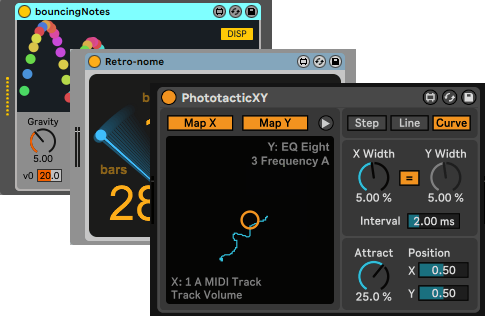

Works
Information Engineering
Over a decade of experience in the Japanese information engineering industry.With Java, ECMAScript, C/C++, C#, and middlewares for messaging and databases.
English-Japanese Localization
Provides naturally and consistently translation as a native Japanese speaker.Also can manage translation workflow and correspond with publishers and developers.
-
Pathos - NetHack Codex - Classic dungeon RPG
Translation as community, workflow management

-
The Signal State - Open-ended puzzle with modular synth simulator
Translation as community including in-game API document
-
20 Minutes Till Dawn - Top down action shoot'em ups
Proofread as community while early access
Max for Live devices for Ableton Live
Developing various audio/MIDI devices for music production software
including Bouncing Notes which was 4k+ downloaded.
See the Max for Live page or user page at maxforlive.com.
Others
- foo_dsp_width
Stereo width adjust component for music player foobar2000